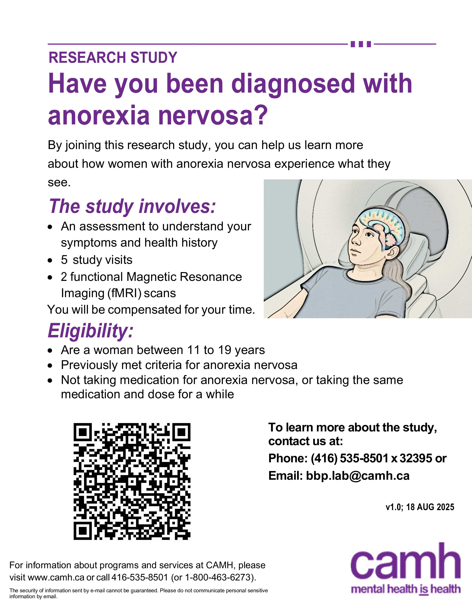

Remediating body image distortions in adolescents with anorexia nervosa using visual attention modulation
Anorexia nervosa (AN) is a serious mental health condition where people have a hard time seeing their body the way it really is. It can make them feel very anxious and unhappy with how they look. Sadly, it’s one of the most dangerous mental health problems because it can lead to death more often than other disorders.
This study wants to learn how people with AN think about their bodies and how their brains work when they look at themselves. Many people with AN don’t see their bodies clearly, even when looking in a mirror. Our study will help understand the brain’s differences in processing what they see for individuals with AN and if this can be changed. The goal is to use this information to create better treatments in the future.
We are recruiting females between the ages of 11-19 who have weight-restored AN, and healthy participants. Participation in this study involves 2-5 study visits over 10 days.
The informed consent discussion and visit 1 will be done online via secure videoconferencing. All visits following visit 1 will require an in-person visit at the Centre for Addiction and Mental Health (CAMH).
Participation in the study involves:
You will be compensated for your time should you wish to participate and complete all study visits.
If you are interested in participating in this study, or if you would like to get more information, please contact the research team at bpp.lab@camh.ca
CTO-5472